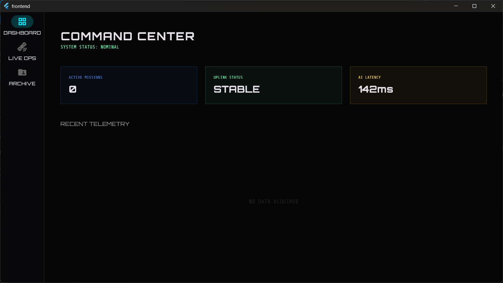
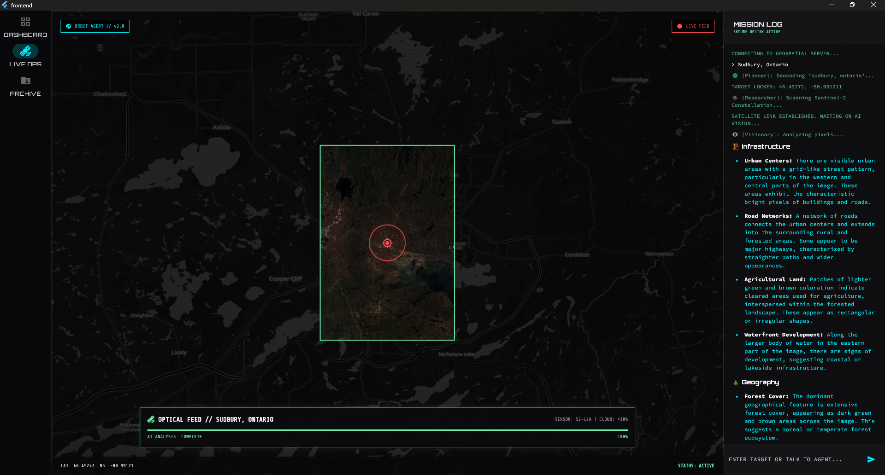
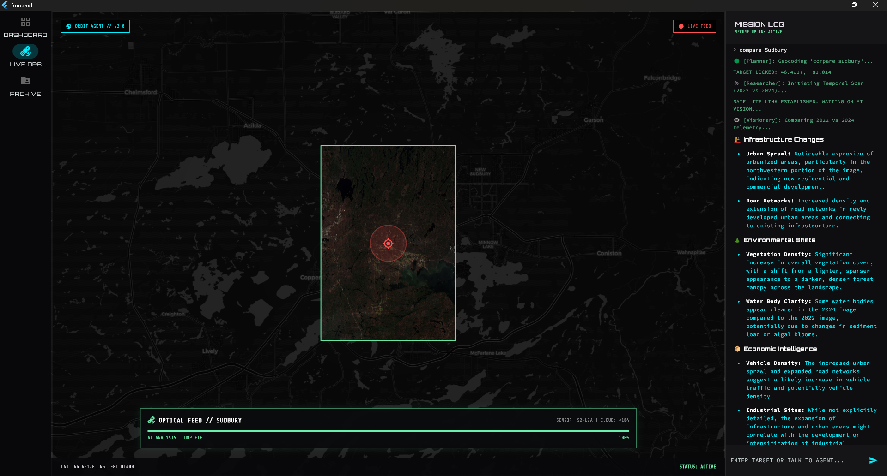

Convert raw optical satellite telemetry into actionable insights immediately using Dual-Agent Reasoning.
Orbit Agent is a robust, decoupled geospatial platform connecting Large Language Models directly to complex mathematical computer-vision systems. Instead of spending hours gathering raw multispectral band data and manually performing calculations, an analyst can now simply ask the system a question via the integrated chat interface.
The system dynamically breaks down natural language, retrieves the exact geographical coordinate bounds, requests the massive optical datasets from Sentinel-2 satellites, computes Normalized Difference Vegetation Indices (NDVI), and projects it onto a high-performance interactive Windows dashboard.

The Planner Agent decomposing unstructured language queries into distinct, executable geospatial pipeline actions.

High-fidelity satellite imaging rendered seamlessly using our hardware-accelerated Flutter interface.

Automated mathematical comparison visualizations highlighting regional vegetation health and density anomalies.